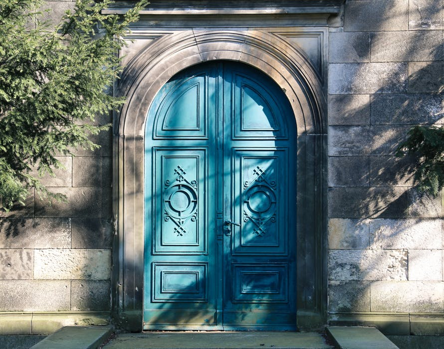

Henry and his wife violet are now madly in love and decide to get married.
Although they are happy together they desire to have a big family.
They eventually bring three beautiful children into the world. Two boys and one girl.
Whose names were Leo, August and Serenity.
"Friends Sunrise" By Minanfotos Licensed under CC 2.0Henry, his wife violet and their three children were a poor family.
They all went on living in the same small house for their entire lives.
The three kids grew up to become very different individuals.
Leo was the eldest and it showed in his bossy personality.
Serentity was the middle child and altholugh she was beautiful like her mom she was a very shy girl.
August, the youngest was rather rambunctious.
Always getting into some sort of trouble and having tyo be helped out by his older brother Leo.
Throughout their money struggles, the family remained close and happy.
All living in the same house that the kids were born in.
 "Low angle spiral ladder"
By Oleg Magni
Licensed under CC 2.0
"Low angle spiral ladder"
By Oleg Magni
Licensed under CC 2.0